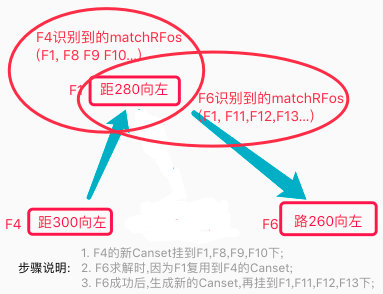
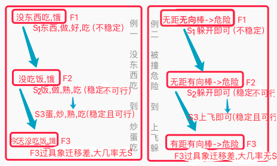
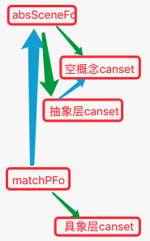

AI系列之《2023.03-05：Canset 迁移与场景竞争》

来源：HELIX_THEORY/手稿/assets/677_Canset的迁移流程改进图.png

来源：HELIX_THEORY/手稿/assets/680_共同点抽象增强迁移性后决策示图.png

来源：HELIX_THEORY/手稿/assets/682_两层scene三层canset示图.png
来源：Note28.md、Note29.md
3 到 5 月从觅食训练切入，重点解决 Canset 惰性期、迁移性差、场景 Fo 外类比、空概念类比、absCanset 初始 SP/EFF，以及 TCCanset 和 TCScene 的竞争机制。
觅食训练暴露出一个关键问题：系统不是没有经验，而是经验迁移不过去。为此，手稿反复增强 Canset 迁移性，让方案能从一个场景迁到另一个相似场景。
TCCanset 与 TCScene 的竞争机制，则把“方案竞争”和“场景理解”绑在一起。只有场景识别足够合理，方案竞争才不会在错误前提上排序。5 月的概念识别准确度问题，也为后续视觉与特征系统埋下伏笔。